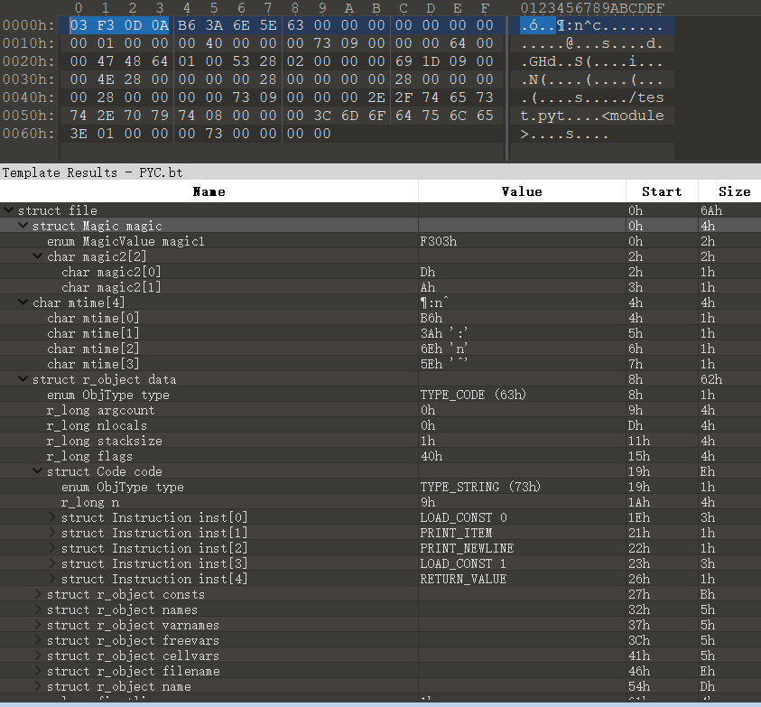

HGAME 似乎年年都有 python 字节码的题目，于是感受了一下 python 字节码
python 是一门解释型语言，边解释边执行（效率比C低，暴力脚本经常炸），通常不会进行整体地编译和链接，使用专门的解释器逐行编译解释成特定字节码，其工作流程如下：
- 将源代码编译转换为字节码
- 解释器执行字节码（是不是像虚拟机:smiley:）
pyc 文件的生成
pyc 文件是 py 文件编译后生成的字节码文件，在 __pycache__ 目录中。其目的是提高加载速度：运行时会检查字节码文件修改时间是否与源代码一致，一致则编译步骤将会被跳过，解释器直接加载 pyc 文件；否则编译保存新生成的字节码。
一般以 module 形式加载时，会生成 pyc 文件。
pyc 文件生成方式有很多，如下列举了几种：
命令
代码
生成单个 pyc 文件
1 py_compile 编译
1
2
| import py_compile
py_compile.compile(r'path/test.py')
|
2 load_module 间接加载
1
2
3
4
5
6
7
8
9
10
11
12
13
14
| import imp
def generate_pyc(name):
truefp, pathname, description = imp.find_module(name)
truetry:
truetrueimp.load_module(name, fp, pathname, description)
truefinally:
truetrueif fp:
truetruetruefp.close()
if __name__ == '__main__':
truegenerate_pyc(input())
|
批量生成 pyc 文件
1
2
| import compileall
compileall.compile_dir(r'path')
|
pyc 文件格式解析
pyc文件一般由 3 个部分组成：
- 最开始 4 个字节是一个 Maigc int，标识此 pyc 的版本信息，不同的版本的 Magic 都在
Python/import.c 内定义
- 接下来 4 个字节还是个 int，是 pyc 产生的时间（TIMESTAMP, 1970.01.01 到产生 pyc 时候的秒数）
- 接下来是个序列化了的 PyCodeObject，此结构在
Include/code.h 内定义，序列化方法在 Python/marshal.c 内定义
康一个实例（python2.7，010editor template 用官方 PYC.bt）

1
2
3
4
5
6
7
8
9
10
11
12
13
14
15
16
17
18
19
20
21
22
23
24
25
26
27
28
29
30
31
32
33
34
35
36
| struct Magic magic 0A0DF303h
char mtime[4] 5E6E3AB6h
TYPE_CODE (63h)
trueint co_argcount 0h
trueint co_nlocals 0h
trueint co_stacksize 1h
trueint co_flags 40h
truestruct PyObject code
truetrueenum ObjType type TYPE_STRING (73h)
truetrueint n 9h
truetrue64 00 00 47 48 64 01 00
truetruetruestruct Instruction inst[0] LOAD_CONST 0 opcode 64h oparg 0h
truetruetruestruct Instruction inst[1] PRINT_ITEM opcode 47h
truetruetruestruct Instruction inst[2] PRINT_NEWLINE opcode 48h
truetruetruestruct Instruction inst[3] LOAD_CONST 1 opcode 64h oparg 1h
truetruetruestruct Instruction inst[4] RETURN_VALUE opcode 53h
truestruct PyObject co_consts
truetrueenum ObjType type TYPE_TUPLE (28h)
truetrueint n 2h
truetruetrueTYPE_INT (69h) 91Dh(2333)
truetruetrueTYPE_NONE (4Eh)
truestruct PyObject co_names
truestruct PyObject co_varnames
truestruct PyObject co_freevars
truestruct PyObject co_cellvars
truestruct PyObject co_filename
truetrueenum ObjType type TYPE_STRING (73h)
truetrueint n 9h
truetrue./test.py
truestruct PyObject co_name
truetrueenum ObjType type TYPE_INTERNED (74h)
truetrueint n 8h
truetrue<module>
trueint co_firstlineno 1h
truestruct PyObject co_lnotab
|
每个作用域（block）对应一个 PyCodeObject 对象，在 python 源码目录下 Include/code.h 文件中，可以看到 PyCodeObject 的定义如下
1
2
3
4
5
6
7
8
9
10
11
12
13
14
15
16
17
18
|
typedef struct {
PyObject_HEAD
int co_argcount;
int co_nlocals;
int co_stacksize;
int co_flags;
PyObject *co_code;
PyObject *co_consts;
PyObject *co_names;
PyObject *co_varnames;
PyObject *co_freevars;
PyObject *co_cellvars;
PyObject *co_filename;
PyObject *co_name;
PyObject *co_lnotab;
} PyCodeObject;
|
Python 字节码“反汇编”分析
python 提供 dis 模块，为 python 字节码提供 “反汇编”，通过 dis.dis() 或 dis.disassemble() 可获得字节码的可阅读理解版本，可以看作虚拟机 opcode。
通过使用 dis.dis() 可以对代码实现进行比较，像是“为什么 {} 比 dict() 更快”的问题，能够更加直接得到解答。
一个简单的例子
（我后悔了我为什么要写这么长的例子（不是）
1
2
3
4
5
6
7
8
9
10
11
12
13
| import dis
def test():
truea = 'hello'
trueb = 2
truec = 3782
trued = a + str(b + c)
trueprint(d)
if __name__ == '__main__':
truetest()
truedis.dis(test)
|
通过 dis 得到能分析的 opcode，第一列是源代码行数，第二列是字节偏移，第三列是命令，第四列是命令参数。
1
2
3
4
5
6
7
8
9
10
11
12
13
14
15
16
17
18
19
20
21
22
23
24
25
26
| >python3 test.py
hello3784
5 0 LOAD_CONST 1 ('hello') # 将co_consts[1]即'hello'字符串压栈
truetruetrue 2 STORE_FAST 0 (a) # 将栈顶TOS存放到co_varnames[0]即变量a
6 4 LOAD_CONST 2 (2) # 将co_consts[2]即数值2压栈
truetruetrue 6 STORE_FAST 1 (b) # 将TOS存放到co_varnames[1]即变量b
7 8 LOAD_CONST 3 (3782) # 将co_consts[3]即数值3782压栈
10 STORE_FAST 2 (c) # 将TOS存放到co_varnames[2]即变量c
8 12 LOAD_FAST 0 (a) # 将co_varnames[0]即变量a压栈
14 LOAD_GLOBAL 0 (str) # 将co_names[0]即str压栈
16 LOAD_FAST 1 (b) # 将co_varnames[1]即变量b压栈
18 LOAD_FAST 2 (c) # 将co_varnames[2]即变量c压栈
20 BINARY_ADD # 将栈顶的变量c和变量b弹出,并做相加运算,将结果压栈
22 CALL_FUNCTION 1 # 调用参数数量为1个的函数,即str(b+c)
24 BINARY_ADD # 弹出栈顶的字符串a和temp=str(b+c),连接,将结果压栈
26 STORE_FAST 3 (d) # 将TOS存放到co_varnames[3]即变量d
9 28 LOAD_GLOBAL 1 (print) # 将co_names[1]即print压栈
30 LOAD_FAST 3 (d) # 将co_varnames[3]即变量d压栈
32 CALL_FUNCTION 1
34 POP_TOP # 弹栈顶
36 LOAD_CONST 0 (None) # 将co_consts[0]即空对象None压栈
38 RETURN_VALUE # 返回TOS到调用者,返回空
|
Python 有着基于栈的运行机制。CPython 使用三种类型的栈：
- 调用栈(call stack)，为每个当前活动的函数调用使用了帧(frame)。栈底是程序的入口点，每个函数调用会推送一个新的帧到调用栈，函数调用返回后帧被销毁。
- 在每个函数/帧中，对应有一个 计算栈(evaluation stack) （也称为 数据栈(data stack)），大多数指令操作在计算栈中进行，如例子。
- 在每个函数/帧中，对应有一个 块栈(block stack)，被用于跟踪某些类型的控制结构：循环、
try / except 块、以及 with 块，进入这些控制结构时会被推入 Block 到块栈中。有助于了解任意给定时刻的活动块，After all，一个 continue 或者 break 语句可能影响正确的块。
部分指令操作
1 一般指令
POP_TOP：删除堆栈顶部（TOS）项。ROT_TWO：交换两个最顶层的堆栈项。DUP_TOP：复制堆栈顶部的引用。
2 Unary 一元操作：弹栈运算后压栈，UNARY_NEGATIVE、UNARY_NOT、UNARY_INVERT、GET_ITER（实现 TOS = iter(TOS) ）
3 Binary 二元操作：弹出栈顶两个值运算后压栈，BINARY_POWER、BINARY_MULTIPLY、BINARY_MATRIX_MULTIPLY、BINARY_FLOOR_DIVIDE、BINARY_TRUE_DIVIDE、BINARY_MODULO、BINARY_ADD、BINARY_SUBTRACT、BINARY_SUBSCR（实现TOS=TOS1[TOS]，TOP1 为栈中第二顶）、BINARY_LSHIFT、BINARY_RSHIFT、BINARY_AND、BINARY_XOR、BINARY_OR
4 Inplace 就地二元操作
5 Load 压栈操作（相当于 push）
LOAD_CONST(consti)：将 co_consts[consti] 的常量推入栈顶。LOAD_GLOBAL(namei)：加载名称为 co_names[namei] 的全局对象推入栈顶。LOAD_FAST(var_num)：将指向局部对象 co_varnames[var_num] 的引用推入栈顶。
6 Store 弹栈赋值操作（相当于 top+pop）（对应 Load 种类）
STORE_FAST(var_num)：将 TOS 存放到局部变量 co_varnames[var_num]。
7 判断跳转循环
COMPARE_OP(opname)：执行布尔运算操作。 操作名称可在 cmp_op[opname] 中找到。相当于汇编中的比较指令。POP_JUMP_IF_TRUE(FALSE)(target)：如果 TOS 为真/假值，则将字节码计数器的值设为 target。 TOS 会被弹出。JUMP_IF_TRUE(FALSE)_OR_POP(target)：如果 TOS 为真/假值，则将字节码计数器的值设为 target 并将 TOS 留在栈顶。 否则（如 TOS 为假/真值），TOS 会被弹出。JUMP_ABSOLUTE(target)：将字节码计数器的值设为 target。JUMP_FORWARD(delta)：将字节码计数器的值增加 delta。FOR_ITER(delta)：TOS 是一个 iterator。可调用它的 __next__() 方法。如果产生了一个新值，则将其推入栈顶（将迭代器留在其下方）。如果迭代器提示已耗尽则 TOS 会被弹出，并将字节码计数器的值增加 delta。SETUP_LOOP(delta)：将要循环的代码块压入堆栈。该代码块从当前指令开始扩展，大小为 delta 字节。BREAK_LOOP、CONTINUE_LOOP(target)
8 函数调用
CALL_FUNCTION(argc)：调用一个可调用对象并传入位置参数。argc 指明位置参数的数量。栈顶包含位置参数，其中最右边的参数在最顶端。在参数之下是一个待调用的可调用对象。CALL_FUNCTION 会从栈中弹出所有参数以及可调用对象，附带这些参数调用该可调用对象，并将可调用对象所返回的返回值推入栈顶。在 3.6 版更改: 此操作码仅用于附带位置参数的调用。RETURN_VALUE：返回 TOS 到函数的调用者。
列出来不够直观，再康几个例子
循环
for 循环
1
2
3
| def test():
truefor i in range(0x10):
truetruepass
|
1
2
3
4
5
6
7
8
9
10
11
12
| 5 0 SETUP_LOOP 16 (to 18) # 循环开始
2 LOAD_GLOBAL 0 (range)
4 LOAD_CONST 1 (16)
6 CALL_FUNCTION 1 # 函数调用,range(16)
8 GET_ITER # TOS=iter(TOS),即将指向栈顶的指针压栈
>> 10 FOR_ITER 4 (to 16) # 不断调用即可遍历iterator(range(16)),将每次产生的新值放于栈顶,迭代器上方,迭代器耗尽时弹出并修改字节码计数器增加4,即跳到12(字节码计数器当前值)+4=16POP_BLOCK
12 STORE_FAST 0 (i)
6 14 JUMP_ABSOLUTE 10 # 简言之,蹦到10
>> 16 POP_BLOCK # 弹出循环Block
>> 18 LOAD_CONST 0 (None) # 函数结束部分
20 RETURN_VALUE
|
while 循环
1
2
3
4
| def test():
truei = 0
truewhile i < 0x16:
truetruei += 1
|
1
2
3
4
5
6
7
8
9
10
11
12
13
14
15
16
17
| 5 0 LOAD_CONST 1 (0)
2 STORE_FAST 0 (i)
6 4 SETUP_LOOP 20 (to 26) # 循环开始,循环Block压栈,大小为20
>> 6 LOAD_FAST 0 (i)
8 LOAD_CONST 2 (22)
10 COMPARE_OP 0 (<) # 比较弹栈顶两个,即i<22,比较结果布尔值压栈
12 POP_JUMP_IF_FALSE 24 # 弹出TOS,如果为假值,则将字节码计数器的值设为24,即跳到24POP_BLOCK
7 14 LOAD_FAST 0 (i)
16 LOAD_CONST 3 (1)
18 INPLACE_ADD
20 STORE_FAST 0 (i)
22 JUMP_ABSOLUTE 6 # 跳到6
>> 24 POP_BLOCK
>> 26 LOAD_CONST 0 (None)
28 RETURN_VALUE
|
函数调用
1
2
3
4
5
6
| def test():
truereturn testt(2, 3, 5)
def testt(a, b, c):
truereturn a + b - c
|
1
2
3
4
5
6
| 5 0 LOAD_GLOBAL 0 (testt)
2 LOAD_CONST 1 (2)
4 LOAD_CONST 2 (3)
6 LOAD_CONST 3 (5)
8 CALL_FUNCTION 3 # 函数调用,testt(2,3,5),返回值压栈
10 RETURN_VALUE # 返回TOS到函数的调用者
|
相关题目
在路上…
参考
dis — Python 字节码反汇编器
浮生半日：探究Python字节码
PYC文件格式分析